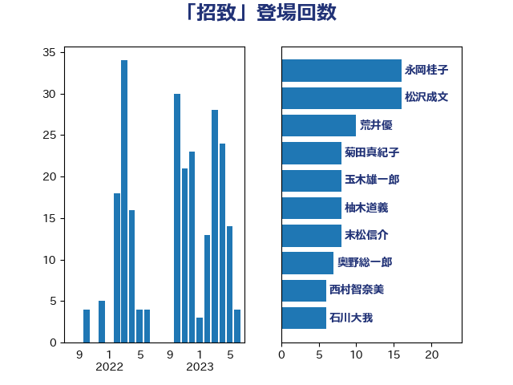

単語「招致」

| 永岡桂子 | 自由民主党 | 16 回 |
| 松沢成文 | 日本維新の会 | 16 回 |
| 荒井優 | 立憲民主党 | 10 回 |
| 菊田真紀子 | 立憲民主党 | 8 回 |
| 玉木雄一郎 | 国民民主党 | 8 回 |
| 柚木道義 | 立憲民主党 | 8 回 |
| 末松信介 | 自由民主党 | 8 回 |
| 奥野総一郎 | 立憲民主党 | 7 回 |
| 西村智奈美 | 立憲民主党 | 6 回 |
| 石川大我 | 立憲民主党 | 6 回 |
| 堀内詔子 | 自由民主党 | 6 回 |
| 道下大樹 | 立憲民主党 | 5 回 |
| 小野泰輔 | 日本維新の会 | 5 回 |
| 辻元清美 | 立憲民主党 | 4 回 |
| 若宮健嗣 | 自由民主党 | 4 回 |
| 新垣邦男 | 立憲民主党 | 4 回 |
| 大西健介 | 立憲民主党 | 4 回 |
| 城井崇 | 立憲民主党 | 4 回 |
| 中川正春 | 立憲民主党 | 4 回 |
| 緒方林太郎 | 無所属 | 3 回 |
| 紙智子 | 日本共産党 | 3 回 |
| 浜田聡 | NHK党 | 3 回 |
| 末次精一 | 立憲民主党 | 3 回 |
| 徳永エリ | 立憲民主党 | 3 回 |
| 宮本岳志 | 日本共産党 | 3 回 |
| 伊藤岳 | 日本共産党 | 3 回 |
| 鰐淵洋子 | 公明党 | 2 回 |
| 高橋はるみ | 自由民主党 | 2 回 |
| 舩後靖彦 | れいわ新選組 | 2 回 |
| 牧山ひろえ | 立憲民主党 | 2 回 |
| 渡辺周 | 立憲民主党 | 2 回 |
| 柳本顕 | 自由民主党 | 2 回 |
| 本庄知史 | 立憲民主党 | 2 回 |
| 斉藤鉄夫 | 公明党 | 2 回 |
| 岸田文雄 | 自由民主党 | 2 回 |
| 小池晃 | 日本共産党 | 2 回 |
| 國重徹 | 公明党 | 2 回 |
| 古川直季 | 自由民主党 | 2 回 |
| 今井絵理子 | 自由民主党 | 2 回 |
| 高橋千鶴子 | 日本共産党 | 1 回 |
| 青柳仁士 | 日本維新の会 | 1 回 |
| 青木一彦 | 自由民主党 | 1 回 |
| 階猛 | 立憲民主党 | 1 回 |
| 阿部司 | 日本維新の会 | 1 回 |
| 長谷川岳 | 自由民主党 | 1 回 |
| 長浜博行 | 無所属 | 1 回 |
| 近藤昭一 | 立憲民主党 | 1 回 |
| 芳賀道也 | 国民民主党 | 1 回 |
| 臼井正一 | 自由民主党 | 1 回 |
| 羽田次郎 | 立憲民主党 | 1 回 |
| 米山隆一 | 立憲民主党 | 1 回 |
| 福島みずほ | 社会民主党 | 1 回 |
| 田村智子 | 日本共産党 | 1 回 |
| 田島麻衣子 | 立憲民主党 | 1 回 |
| 牧義夫 | 立憲民主党 | 1 回 |
| 漆間譲司 | 日本維新の会 | 1 回 |
| 湯原俊二 | 立憲民主党 | 1 回 |
| 池田佳隆 | 自由民主党 | 1 回 |
| 武見敬三 | 自由民主党 | 1 回 |
| 武藤容治 | 自由民主党 | 1 回 |
| 横沢高徳 | 立憲民主党 | 1 回 |
| 森山浩行 | 立憲民主党 | 1 回 |
| 梅谷守 | 立憲民主党 | 1 回 |
| 梅村みずほ | 日本維新の会 | 1 回 |
| 林芳正 | 自由民主党 | 1 回 |
| 杉本和巳 | 日本維新の会 | 1 回 |
| 杉尾秀哉 | 立憲民主党 | 1 回 |
| 朝日健太郎 | 自由民主党 | 1 回 |
| 早坂敦 | 日本維新の会 | 1 回 |
| 川田龍平 | 立憲民主党 | 1 回 |
| 岩渕友 | 日本共産党 | 1 回 |
| 岡田直樹 | 自由民主党 | 1 回 |
| 山添拓 | 日本共産党 | 1 回 |
| 山本太郎 | れいわ新選組 | 1 回 |
| 小西洋之 | 立憲民主党 | 1 回 |
| 小沼巧 | 立憲民主党 | 1 回 |
| 寺田稔 | 自由民主党 | 1 回 |
| 宮本徹 | 日本共産党 | 1 回 |
| 大石あきこ | れいわ新選組 | 1 回 |
| 大串博志 | 立憲民主党 | 1 回 |
| 吉川元 | 立憲民主党 | 1 回 |
| 勝部賢志 | 立憲民主党 | 1 回 |
| 伊藤孝恵 | 国民民主党 | 1 回 |
| 井上哲士 | 日本共産党 | 1 回 |
| 串田誠一 | 日本維新の会 | 1 回 |
| 三木圭恵 | 日本維新の会 | 1 回 |